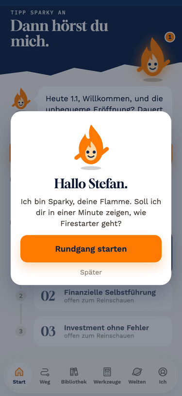

Fassung A ist der Name normal geschrieben, Fassung B in Lautschrift (Siemon, Schtefan, Renee). In der App läuft derzeit Fassung B. Sag mir je Name, welche besser klingt.
Login 1: Karte mit Rundgang-Angebot. Login 2 und 3: Wiederholung anbieten, mit „nicht mehr zeigen". Ab Login 4: kurze Karte „Weiter bei …", der Tipp auf „Los" lässt die Flamme „Hallo Stefan" sagen.

Alle Namen in Fassung B: